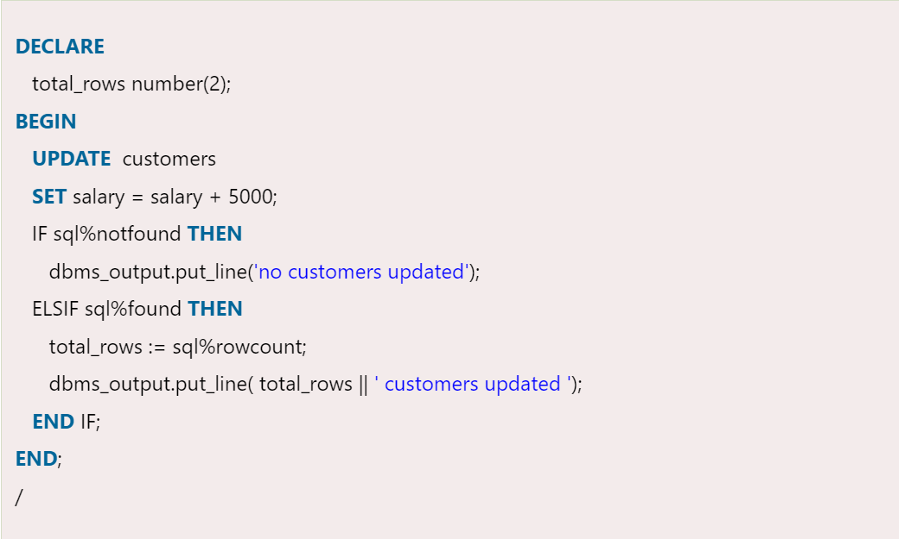

CURSOR
When an SQL statement is processed, Oracle creates a memory area known as context area. A cursor is a pointer to this context area. It contains all information needed for processing the statement.
In PL/SQL, the context area is controlled by Cursor. A cursor contains information on a select statement and the rows of data accessed by it.
A cursor is used to referred to a program to fetch and process the rows returned by the SQL statement, one at a time. There are two types of cursors:
1. Implicit Cursors
2. Explicit Cursors
PL/SQL Implicit Cursors
The implicit cursors are automatically generated by Oracle while an SQL statement is executed,
if you don't use an explicit cursor for the statement.
These are created by default to process the statements when DML statements like INSERT, UPDATE, DELETE etc.
are executed.
Orcale provides some attributes known as Implicit cursor's attributes to check the status of DML operations.
Some of them are: %FOUND, %NOTFOUND, %ROWCOUNT and %ISOPEN.
For example: When you execute the SQL statements like INSERT, UPDATE, DELETE then the cursor attributes tell
whether any rows are affected and how many have been affected. If you run a SELECT INTO statement in PL/SQL
block, the implicit cursor attribute can be used to find out whether any row has been returned by the SELECT
statement. It will return an error if there no data is selected.
INPUT

OUTPUT

PL/SQL Explicit Cursors
The Explicit cursors are defined by the programmers to gain more control over the context area.
These cursors should be defined in the declaration section of the PL/SQL block. It is created on a SELECT
statement which returns more than one row.
Syntax of explicit cursor
CURSOR cursor_name IS select_statement;
INPUT

OUTPUT